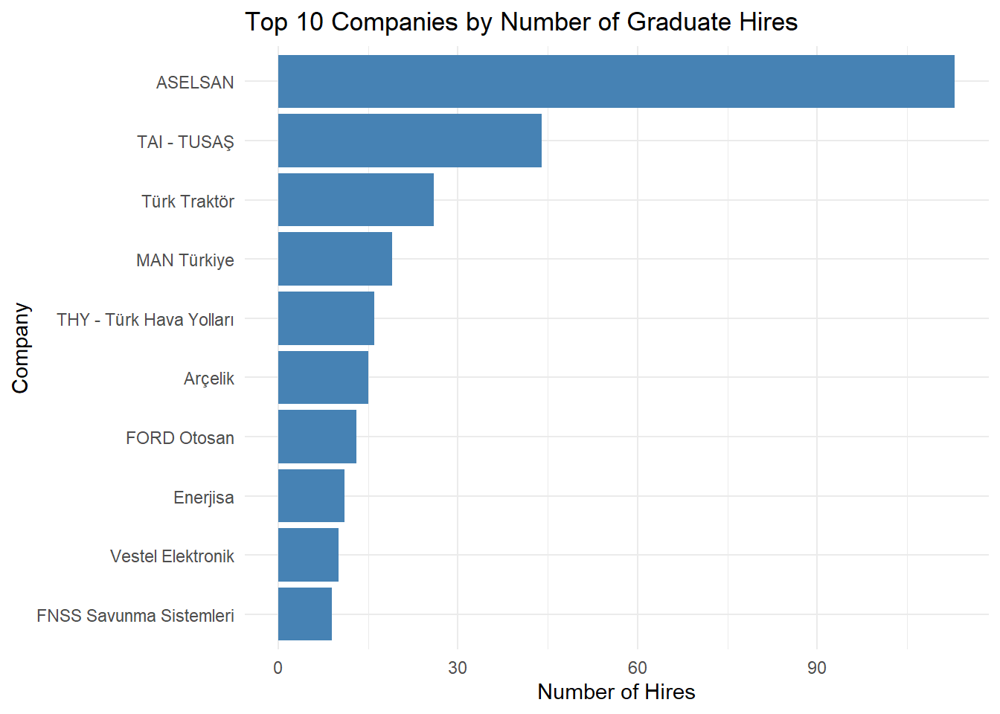
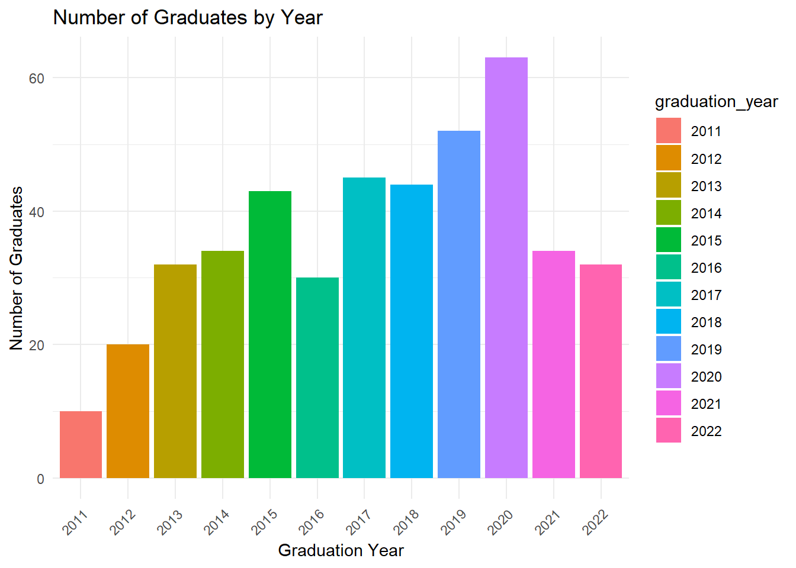
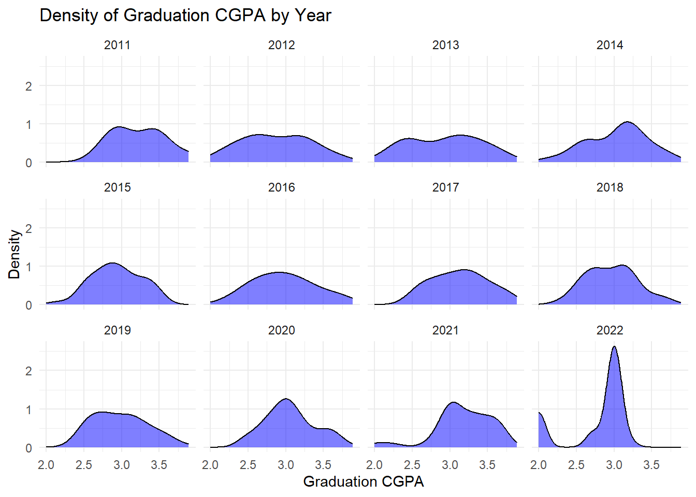
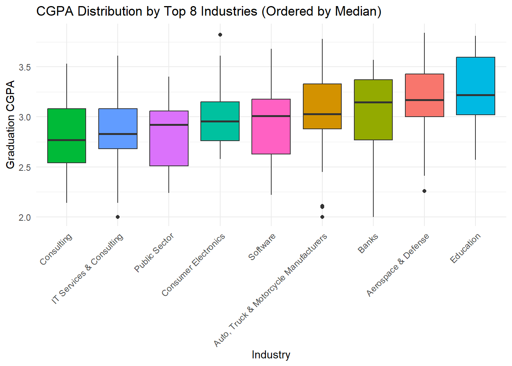
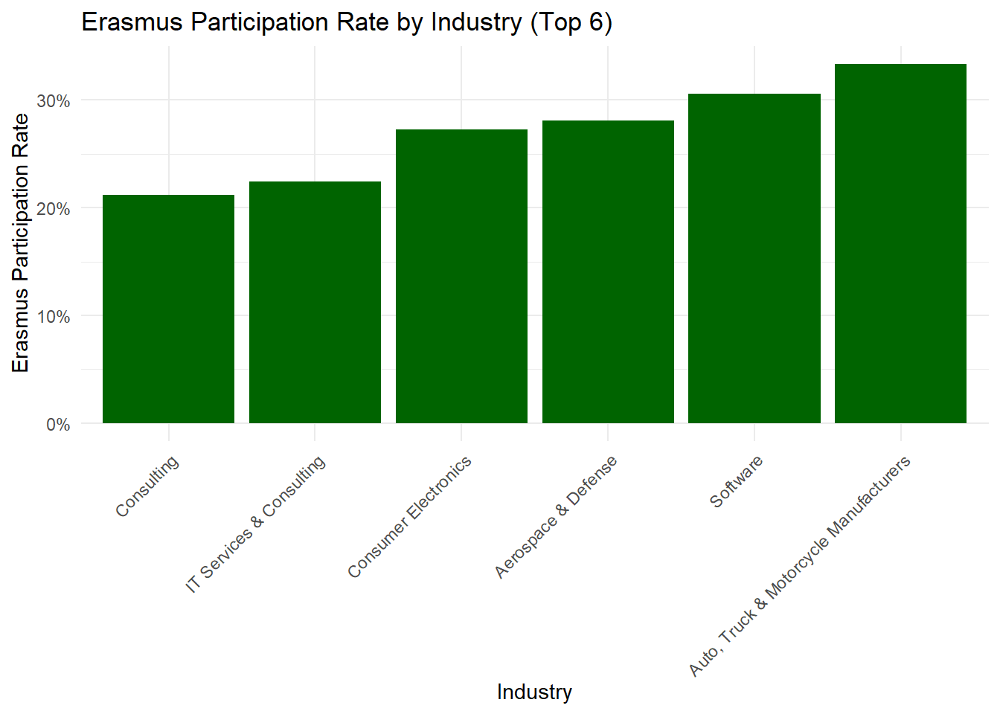

#install.packages("dplyr")
#install.packages("ggplot2")
#install.packages("lubridate")
library(dplyr)
library(ggplot2)
library(lubridate)EMU Hacettepe
EMU660 - Analitik Yöntemlerle Karar Verme
2025 – 2026 Bahar Dönemi
Ara Sınav
myEMU Veritabanı
EMU Hacettepe’nin bölüm başkanı Prof. Dr. Murat Caner Testik, mezun verilerinden yararlanarak bölümün kariyer hizmetlerini geliştirmek istemektedir. Caner hoca, analitik yöntemlerle karar verme alanındaki yetkinliğinize güvendiği için yardımınıza başvurmaktadır. Bu doğrultuda, EMU Hacettepe’nin myEMU Öğrenci ve Mezun Takip Sisteminden sağlanan myemu_data isimli veri setini sizinle paylaşmaktadır.
myemu_data, bölüm lisans programından mezun olan ve iş deneyimlerine sahip olan mezunlara ait bilgileri içeren bir veri setidir.Veri seti, mezunların, mezuniyet not ortalamalarına (CGPA), geçmiş iş tecrübelerine ve öğrenciyken katıldıkları Erasmus programına dair detayları barındırır. Erasmus katılım sütunundaki 1 değeri, ilgili kişinin Erasmus programına katıldığını belirtir.
Bir mezunun, birden fazla iş tecrübesi olabileceği için veri setinde birden fazla kaydı (satırı) olabilir. Aynı kişiye ait her bir satırda farklı iş tecrübesi olsa da, not ortalaması ve erasmus gibi bilgiler aynı kişiye ait her satırda tekrar etmektedir.
Caner hoca, özellikle mezunların iş deneyimi örüntüleri ve sektör bazlı kariyer yollarıyla ilgilenmektedir. Bu bilgiler, bölümün kariyer danışmanlığı hizmetlerini iyileştirmek için kullanılacaktır. Artık verileri analiz etmeye hazırsınız!
R ile Mezun Verilerini Analiz Etme
Gerekli kütüphaneleri içe aktar
Aşağıdaki 3 paket sonraki analizler için gereklidir. Ekstra paketler kullanmak isterseniz buraya ekleyebilirsiniz. Bilgisayarınızda olmayan paketleri içe aktarmadan önce install.packages("...") ile yükleyiniz.
EMU Hacettepe mezun verisini R’a yükleyin
Caner hoca veri setini size .RData dosyası (myemu_data.RData) olarak vermiştir. Veri dosyasına www.hadi.hacettepe.edu.tr’de, ders sayfamızda, sınav gönderiminden erişebilirsiniz. Dosyayı, R quarto dosyanızla aynı klasöre koyunuz.
# Veri setiniz myemu_data değişkenine data frame olarak yüklenecektir.
load("myemu_data.RData")Görev 1. Temel Veri Keşfi
Isınmak için basit görevlerle başlıyorsunuz.
Veri setinde kaç tane benzersiz (unique) şirket (work_company) var? (sonucu yazdırın)
unique_companies <- length(unique(myemu_data$work_company))
print(unique_companies)[1] 407Veri setinde kaç tane benzersiz sektör (work_industry) var? (sonucu yazdırın)
unique_industries <- length(unique(myemu_data$work_industry))
print(unique_industries)[1] 76Her bir mezunun kaç farklı iş deneyimi kaydı olduğunu hesaplayınız. Sonuçları jobs_per_graduate isimli bir veri çerçevesinde (data.frame) saklayınız. Bu veri çerçevesinde student_id ve job_count (iş sayısı) sütunları bulunmalıdır.
İpucu 1: group_by() ile student_id’ye göre gruplayın.
İpucu 2: summarise() ile n() fonksiyonunu kullanarak her öğrencinin iş sayısını hesaplayın.
jobs_per_graduate <- myemu_data |>
group_by(student_id) |>
summarise(job_count =n())
jobs_per_graduate# A tibble: 439 × 2
student_id job_count
<int> <int>
1 20726914 4
2 20726928 1
3 20726933 5
4 20726947 4
5 20726952 4
6 20726971 2
7 20726985 2
8 20726999 2
9 20727005 1
10 20727019 5
# ℹ 429 more rowsOrtalama iş deneyimi sayısını ve en fazla iş deneyimine sahip mezunun kaç iş deneyimi olduğunu yazdırın.
print(mean(jobs_per_graduate$job_count))[1] 2.027335print(max(jobs_per_graduate$job_count))[1] 7Görev 2. En Çok Mezun İstihdam Eden Şirketler
Caner Hoca, hangi şirketlerin bölüm mezunlarını en çok istihdam ettiğini merak etmektedir. En çok mezun istihdam eden 10 şirketi tespit edecek ve bunu görselleştireceksiniz.
Şirket Başına İstihdam Sayısını Hesapla
Not: Bir şirket aynı kişiyi farklı pozisyonlarda çalıştırmış olabilir. Bu durumları ayrı istihdam kayıtları olarak değerlendirebilirsiniz.
İpucu 1: count() fonksiyonu ile work_company sütunundaki kayıt sayılarını hesaplayın.
İpucu 2: arrange() ile azalan sırada düzenleyin.
İpucu 3: slice_head() ile ilk 10 şirketi seçin.
top10_companies <- myemu_data |>
count(work_company) |>
arrange(desc(n)) |>
slice_head(n = 10)
print(top10_companies) work_company n
1 ASELSAN 113
2 TAI - TUSAŞ 44
3 Türk Traktör 26
4 MAN Türkiye 19
5 THY - Türk Hava Yolları 16
6 Arçelik 15
7 FORD Otosan 13
8 Enerjisa 11
9 Vestel Elektronik 10
10 FNSS Savunma Sistemleri 9En Çok İstihdam Eden 10 Şirket İçin Yatay Çubuk Grafiği Oluştur
Şirket isimlerinin uzun olabileceğini göz önünde bulundurarak, yatay bir çubuk grafiği oluşturun. Şirketleri istihdam sayısına göre sıralayın.
İpucu 1: geom_bar(stat = "identity") kullanın.
İpucu 2: reorder() ile şirketleri n değerine göre sıralayın.
İpucu 3: Yatay çubuk grafiği için y eksenine şirket isimlerini, x eksenine sayıları yerleştirin.
top10_companies |>
ggplot(aes(x = n , y = reorder(work_company,n))) +
geom_bar(stat = "identity", fill = "steelblue") +
labs(title = "Top 10 Companies by Number of Graduate Hires",
x = "Number of Hires",
y = "Company") +
theme_minimal()
Görev 3. Mezuniyet Yılına Göre CGPA Analizi
Caner Hoca, yıllar içinde mezunların akademik performansının nasıl değiştiğini merak etmektedir. Mezuniyet yılına göre CGPA dağılımını inceleyeceksiniz.
graduation_year sütunu ekleyin.
Veri setinde graduation_date sütunu GG/AA/YYYY formatındadır. Ancak size sadece yıl bilgisi gereklidir.
İlk olarak,
lubridatekütüphanesindendmy()fonksiyonunu kullanarakgraduation_date’i tarihe dönüştürün.Sonra,
year()fonksiyonu ile yılı çıkarın.Son olarak
graduation_yearadında yeni bir sütun olarak veri çerçevenize ekleyin.Sonraki analizlerde tutarlılık için
graduation_year’ı faktör tipi bir değişken (sütun) olarak saklayınız.
myemu_data <- myemu_data |>
mutate(graduation_year = as.factor(year(dmy(graduation_date))))Yıl Bazında Özet İstatistikleri Hesapla
Her mezuniyet yılı için mezun sayısı, medyan CGPA, minimum CGPA ve maksimum CGPA hesaplayın.
İpucu 1: Her mezunun sadece ilk görünümünü korumak için distinct() fonksiyonunu kullanın (student_id sütununa göre, keep_all = TRUE ile).
İpucu 2: group_by() ile graduation_year’a göre gruplayın.
İpucu 3: summarise() ile gerekli istatistikleri hesaplayın.
İpucu 4: Mezun sayısını bulmak için n() fonksiyonunu kullanın.
myemu_data |>
distinct(student_id, .keep_all = TRUE) |>
group_by(graduation_year) |>
summarise(
count_graduates = n(),
median_cgpa = median(graduation_cgpa, na.rm= TRUE),
min_cgpa = min(graduation_cgpa, na.rm= TRUE),
max_cgpa = max(graduation_cgpa, na.rm= TRUE)
)# A tibble: 12 × 5
graduation_year count_graduates median_cgpa min_cgpa max_cgpa
<fct> <int> <dbl> <dbl> <dbl>
1 2011 10 3.24 2.76 3.89
2 2012 20 2.80 2.11 3.68
3 2013 32 2.99 2.1 3.73
4 2014 34 3.13 2.12 3.73
5 2015 43 2.95 2.14 3.51
6 2016 30 2.96 2.18 3.82
7 2017 45 3.18 2.5 3.81
8 2018 44 2.99 2.28 3.73
9 2019 52 2.96 2.39 3.84
10 2020 63 3.03 2.4 3.82
11 2021 34 3.19 2 3.69
12 2022 32 3 2 3.21Yıl Bazında Mezun Sayısı Çubuk Grafiği Oluştur
Her yılda kaç mezun olduğunu gösteren bir çubuk grafiği oluşturun.
İpucu 1: Her mezunun yalnızca bir kez temsil edilmesi için distinct() kullanın.
İpucu 2: geom_bar() kullanın (sayımı ggplot otomatik yapacaktır).
İpucu 3: Yılları farklı renklerle göstermek için fill argümanını kullanın.
myemu_data |>
distinct(student_id, .keep_all = TRUE) |>
ggplot(aes(x = graduation_year, fill = graduation_year)) +
geom_bar() +
labs(title = "Number of Graduates by Year",
x = "Graduation Year",
y = "Number of Graduates") +
theme_minimal() +
theme(axis.text.x = element_text(angle = 45, hjust = 1))
Her Mezuniyet Yılı İçin Yoğunluk Grafiği (Density Plot) Çizme
CGPA dağılımını yıllar bazında görebilmek için yoğunluk grafiği oluşturun. facet_wrap() ile her yıl için ayrı bir panel oluşturun.
İpucu 1: Her mezunun yalnızca bir kez temsil edilmesi için distinct() kullanın.
İpucu 2: geom_density() kullanın ve fill = "blue", alpha = 0.5 argümanlarını ekleyin.
İpucu 3: x ekseninde graduation_cgpa yer alacaktır.
İpucu 4: facet_wrap() ile graduation_year’a göre yüzeyleme yapın.
myemu_data |>
distinct(student_id, .keep_all = TRUE) |>
ggplot(aes(x = graduation_cgpa)) +
geom_density(fill = "blue", alpha = 0.5) +
facet_wrap(~ graduation_year) +
labs(title = "Density of Graduation CGPA by Year",
x = "Graduation CGPA",
y = "Density") +
theme_minimal()
Yoğunluk grafiklerine dayanarak hangi yılda mezun olanların CGPA dağılımı en geniş yayılıma sahiptir? Yıllar arasında belirgin bir CGPA farkı gözlemliyor musunuz?
| Cevap: |
|---|
| 2017 daha geniş bir yayılıma sahip görünüyor. Genel olarak 2.5-3.0 bandında yoğunlaşıyor, belirgin bir fark yok. |
Görev 4: Sektör Bazında CGPA Karşılaştırması
Caner Hoca, farklı sektörlerde çalışan mezunların akademik performanslarının nasıl farklılaştığını merak etmektedir. En çok mezun istihdam eden sektörlerdeki CGPA dağılımlarını inceleyeceksiniz.
En Çok İstihdam Kaydına Sahip 8 Sektörü Belirle
İpucu 1: count() ile work_industry sütunundaki kayıt sayılarını hesaplayın.
İpucu 2: slice_max() fonksiyonu ile en yüksek n değerine sahip 8 sektörü seçin.
top8_industries <- myemu_data |>
count(work_industry) |>
slice_max(n, n = 8)
print(top8_industries) work_industry n
1 Aerospace & Defense 221
2 Auto, Truck & Motorcycle Manufacturers 81
3 IT Services & Consulting 49
4 Consumer Electronics 44
5 Software 36
6 Consulting 33
7 Banks 32
8 Education 23
9 Public Sector 23Bu 8 Sektör İçin CGPA Boxplot Grafiği Oluştur
Sadece yukarıda belirlediğiniz 8 sektöre ait verileri filtreleyerek, sektör bazında CGPA boxplot grafiği oluşturun. Sektörleri medyan CGPA’ya göre sıralayın.
İpucu 1: filter() ile work_industry %in% top8_industries$work_industry kullanarak filtreleme yapın.
İpucu 2: reorder() fonksiyonu ile sektörleri medyan CGPA’ya göre sıralayın.
myemu_data |>
filter(work_industry %in% top8_industries$work_industry) |>
ggplot(aes(x = reorder(work_industry, graduation_cgpa, FUN=median), y = graduation_cgpa, fill = work_industry)) +
geom_boxplot() +
labs(title = "CGPA Distribution by Top 8 Industries (Ordered by Median)",
x = "Industry",
y = "Graduation CGPA") +
theme_minimal() +
theme(axis.text.x = element_text(angle = 45, hjust = 1),
legend.position = "none")
Sektörler arasında CGPA dağılımı açısından dikkat çekici bir farklılık var mı? En yüksek medyan CGPA’ya sahip sektör hangisidir?
| Cevap: |
|---|
| Dikkaat çekici bir farklılık yok. En yüksek medyan CPGA’ya sahip Education sektörü. |
Görev 5: Erasmus Katılımı ve Sektör Tercih İlişkisi
Caner Hoca, Erasmus programına katılan ve katılmayan mezunların sektör tercihlerinde farklılık olup olmadığını merak etmektedir.
Erasmus Katılım Faktörü Oluştur
Veri setinde erasmus_participation sütunu, Erasmus programına katılım durumunu göstermektedir. Katılımcılar için bu sütun 1 değerini alırken, programa katılmayanlar için sütunda NA değeri bulunmaktadır. ifelse() ve is.na() fonksiyonlarını iç içe kullanarak, NA değerlerini "Hayır", NA olmayanları (1’leri) "Evet" olarak dönüştürün ve sonuçları erasmus_factor isimli yeni bir sütunda faktör türünde kaydedin.
myemu_data <- myemu_data |>
mutate(erasmus_factor = factor(ifelse(is.na(erasmus_participation), "Hayır", "Evet")))En Çok İstihdam Kaydına Sahip 6 Sektör İçin Erasmus Katılım Oranı Hesapla
Önce en çok istihdam kaydına sahip 6 sektörü belirleyin. Sonra bu sektörler için Erasmus’a katılan mezunların oranını hesaplayın.
İpucu 1: En çok kayda sahip 6 sektörü belirlemek için önceki görevdeki yaklaşımı kullanın.
İpucu 2: Bu sektörlerdeki verileri filter() ile filtreleyin.
İpucu 3: group_by(work_industry) ile gruplayın.
İpucu 4: summarise() içinde mean(erasmus_factor == "Evet") ile oranı hesaplayın.
top6_industries <- myemu_data |>
count(work_industry) |>
slice_max(n, n = 6)
erasmus_by_industry <- myemu_data |>
filter(work_industry %in% top6_industries$work_industry) |>
group_by(work_industry) |>
summarise(erasmus_rate = mean(erasmus_factor == "Evet")) |>
arrange(desc(erasmus_rate))
print(erasmus_by_industry)# A tibble: 6 × 2
work_industry erasmus_rate
<chr> <dbl>
1 Auto, Truck & Motorcycle Manufacturers 0.333
2 Software 0.306
3 Aerospace & Defense 0.281
4 Consumer Electronics 0.273
5 IT Services & Consulting 0.224
6 Consulting 0.212Sektör Bazında Erasmus Katılım Oranı Çubuk Grafiği Oluştur
Sektörleri Erasmus katılım oranına göre sıralayarak bir çubuk grafiği oluşturun.
İpucu: reorder() ile sektörleri erasmus_rate’e göre sıralayın.
erasmus_by_industry |>
ggplot(aes(x = reorder(work_industry, erasmus_rate), y = erasmus_rate)) +
geom_col(fill = "darkgreen") +
labs(title = "Erasmus Participation Rate by Industry (Top 6)",
x = "Industry",
y = "Erasmus Participation Rate") +
theme_minimal() +
theme(axis.text.x = element_text(angle = 45, hjust = 1)) +
scale_y_continuous(labels = scales::percent)
Erasmus katılım oranları sektörler arasında farklılık gösteriyor mu? Bu farklılıklara dayanarak “Erasmus’a katılmak belirli sektörlerde çalışma olasılığını artırmaktadır” sonucuna varabilir misiniz? Nedenini açıklayınız.
| Cevap: |
|---|
| Sektörler arasında bariz bir fark bulunmuyor. Bu sonuca kesin bir şekilde varamayız. Sadece çalışan kişilerin erasmusa katılım oranlarını görüyoruz. |